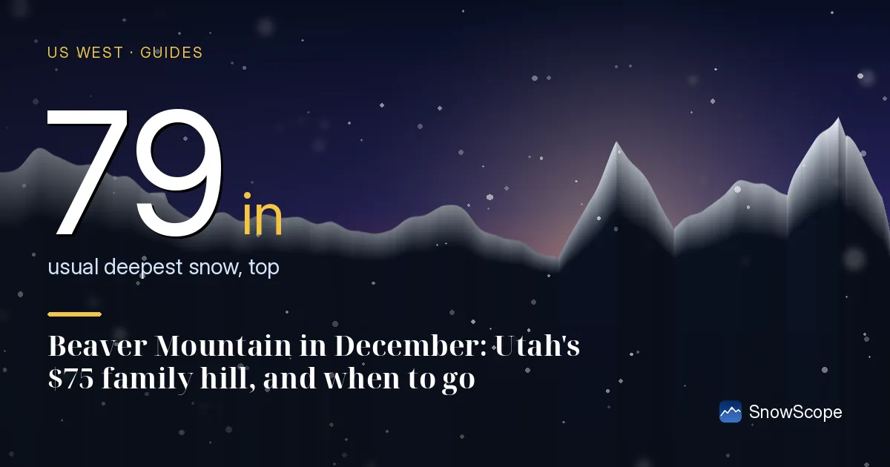

Beaver Mountain in December: Utah's $75 family hill, and when to go
Beaver Mountain stands out in Utah for one simple reason: a single adult ticket price of $75 with no premium on busy days. The trade-off is timing. Snow history shows that early December here is thin and unreliable; the smart move is to wait until the second half of the month.
See the live snow forecast for Beaver Mountain in the SnowScope appSnow depth, powder alerts and the 3D map, free.
Where Beaver Mountain sits
Beaver Mountain lies at the head of Logan Canyon in northern Utah, well above the town of Logan. SnowScope maps 6 lifts and roughly 19 mi (31 km) of runs climbing from 7,160 ft (2,181 m) at the base to 8,760 ft (2,670 m) at the top. The mountain has a low-key character: it is family-owned, with a simple ticket window and no sprawling village.
The vertical rise is 490 m, which puts mid-mountain around 7,960 ft (2,425 m). This mid-elevation zone is where most skiers spend their time and where snow depth matters most for early-season runs.

When December snow arrives
Beaver Mountain's December schedule is unforgiving early on. At mid-mountain, only 43 percent of past winters had good snow (a weekly average of 20 in / 50 cm or more) in the first week of December. By mid-month that share rises to 54 percent, by the third week to 61 percent, and by Christmas week to 76 percent.
In plain numbers: a typical 1 December holds 16 in (40 cm) at mid-mountain; by 15 December it reaches 22 in (57 cm), and by Christmas Day 28 in (71 cm). At the lower base, a typical 15 December has only 17 in (42 cm), and just one winter in three reaches 20 in on that date. A lean winter—one in ten—leaves only 10 in (25 cm) at mid-mountain by mid-month, forcing skiers onto groomed trails.

Fixed price in a world of surge pricing
For the 2026–27 season, an adult ticket (ages 12–69) costs $75 all day, every day. No peak surcharge. This is rare in Utah, where most resorts now use dynamic pricing that climbs as your visit approaches or lands on a holiday.
If you live in the Logan area, the 10-pack reduces your per-visit cost: $720 at the Logan office or $740 online. Beaver Mountain also participates in the Indy Pass: the Indy Base Pass is $419 and includes two days at each of 300+ member areas with certain blackout dates; the Indy+ Pass is $469 with no blackouts.
How it compares to Brighton
Brighton, in Big Cottonwood Canyon south of Salt Lake, begins its dynamic tickets at $72 for early purchasers. On snow history, Brighton carries far more December depth: 37 in (94 cm) at mid-mountain on a typical 15 December, and 89 percent of past winters exceeded 20 in on that date.
The choice hinges on your dates. Beaver Mountain is the right choice if you want a guaranteed flat price and can ski after mid-December. Brighton's higher altitude and longer snow season make it safer for an early-December trip, though you will pay more. For a family trip in late December with a fixed budget, Beaver Mountain's $75 ticket wins.
Early season has thinned over time
Snow patterns here have shifted. In the earliest 15 winters of the SnowScope record (1980–81 to 1994–95), mid-mountain averaged 26 in (66 cm) on a typical 15 December, and 73 percent of winters reached good-snow depth by then. In the most recent 15 winters (2011–12 to 2025–26), that dropped to 17 in (43 cm) with only 33 percent of winters above 20 in.
Last winter was especially lean: just 10 in (26 cm) at mid-mountain on 15 December. This trend underlines why patience pays. The mountain reliably builds snow by Christmas week. Plan your trip for late December or later, and check the SnowScope map before you drive up Logan Canyon.
On the mountain: what to know
Logan Canyon (US-89) is a steep, winding mountain road. Carry tire chains or switch to snow tires before you go. Early-season runs can conceal rocks and stumps under thin cover, so stay on groomed trails until the base thickens.
The mountain's highest slopes, above 8,760 ft (2,670 m), collect more snow and hold it longer. If conditions are marginal at the base, the summit runs are your best bet. Midweek visits are quieter and often have fresher corduroy than weekends.
Tips for skiers
- Book your trip for 15 December or later. Odds of good snow improve every week through the end of the month.
- If you live near Logan and ski often, buy the 10-pack or join the Indy Pass instead of paying per day.
- Early December is thin here: use it for a low-commitment midweek run or as a backup plan if another resort disappoints.
- In poor visibility, stick to marked groomed terrain. Early season snow may hide obstacles.
- Carry chains; the canyon road can close after heavy snow.
About these numbers
Resort snow depths are the deepest snow on the resort's upper slopes on the date shown; they are estimates for an area, not a measurement at one point. Forecasts can change. Always read the official avalanche bulletin before going off-piste.
Official avalanche bulletins: Utah Avalanche Center
Cite this report
For research, teaching or the press: the numbers and charts are free to reuse under CC BY 4.0 with this citation.
SnowScope (2026), Beaver Mountain in December: Utah's $75 family hill, and when to go, https://snowscope.app/blog/en/2026/11/beaver-mountain-utah-december-cheap-skiing.html, accessed 2026-11-15
SnowScope (Atlas Labs). (2026, November 15). Beaver Mountain in December: Utah's $75 family hill, and when to go. SnowScope snow reports. https://snowscope.app/blog/en/2026/11/beaver-mountain-utah-december-cheap-skiing.html
BibTeX
@misc{snowscope2026beavermountainutahdecemb,
author = {{SnowScope (Atlas Labs)}},
title = {Beaver Mountain in December: Utah's $75 family hill, and when to go},
year = {2026},
month = nov,
howpublished = {\url{https://snowscope.app/blog/en/2026/11/beaver-mountain-utah-december-cheap-skiing.html}},
note = {Published 2026-11-15 09:34 UTC; accessed 2026-11-15}
}· CC BY 4.0 · Methods, data and tools →
Beaver Mountain: snow and temperature by height, this winter vs last (tools) →
Follow Beaver Mountain
Free: a message when fresh snow is coming, and the forecast every morning.
More snow reports

From Ski Cooper ($49 weekdays, $99 weekends) to Mt. Baker ($98.80 vs $115.42): checked December price splits at seven US West ski areas, with their snow odds.

Snow above 1,500 m covers only 11% of the US West high ground. The snow line ranges from 2,000 m in the Cascades to 3,200 m in New Mexico, seen from space on 13 November 2026.